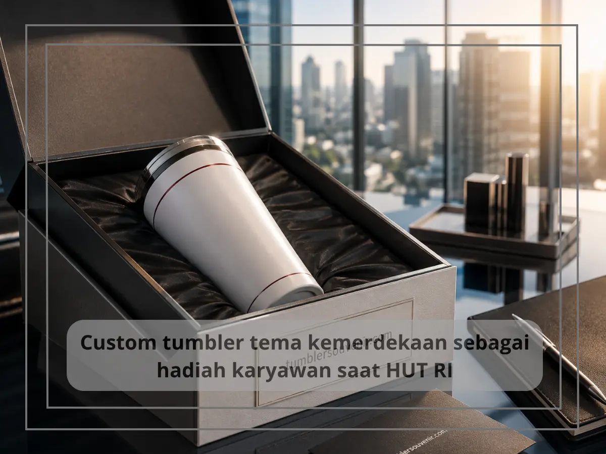

Custom Tumbler Tema Kemerdekaan untuk Hadiah Karyawan dan Klien
Ringkasan
Custom tumbler tema kemerdekaan adalah proses personalisasi tumbler dengan desain merah putih dan identitas perusahaan yang dijadikan hadiah apresiasi bagi karyawan maupun klien pada momen HUT RI. Proses ini umumnya diawali dengan konsultasi desain, dilanjutkan dengan mockup, lalu produksi massal sesuai jumlah kebutuhan perusahaan. Pemberian hadiah bertema kemerdekaan ini dinilai efektif meningkatkan rasa keterikatan karyawan terhadap perusahaan.
Daftar Isi
Mengapa Momen HUT RI Cocok untuk Memberi Apresiasi Karyawan?
Momen HUT RI menjadi kesempatan yang tepat bagi perusahaan untuk memberikan apresiasi kepada karyawan karena bertepatan dengan semangat kebersamaan dan rasa syukur secara nasional. Pemberian hadiah pada momen ini tidak hanya dimaknai sebagai bentuk penghargaan, tetapi juga memperkuat rasa kebanggaan karyawan terhadap tempat mereka bekerja.
Selain untuk karyawan internal, momen HUT RI juga sering dimanfaatkan perusahaan untuk mempererat hubungan dengan klien dan mitra bisnis melalui pemberian souvenir yang relevan dengan semangat kemerdekaan, sekaligus menjaga relasi bisnis tetap hangat sepanjang tahun.

Bagaimana Proses Custom Tumbler Tema Kemerdekaan Dilakukan?
Proses custom tumbler tema kemerdekaan umumnya dimulai dari tahap konsultasi kebutuhan, di mana perusahaan menyampaikan jumlah pesanan, anggaran, dan gambaran desain yang diinginkan. Setelah itu, tim desain akan membuat mockup awal yang mencantumkan warna, logo perusahaan, serta elemen tema kemerdekaan sesuai permintaan.
Setelah mockup disetujui, tahap selanjutnya adalah produksi massal sesuai jumlah unit yang dibutuhkan. Pada tahap ini, kualitas cetak logo dan ketahanan material tumbler menjadi perhatian utama agar hasil akhir sesuai standar yang diharapkan perusahaan. Proses ini biasanya membutuhkan waktu tertentu, sehingga disarankan untuk mengajukan pemesanan jauh sebelum tanggal 17 Agustus.
Apa Saja yang Perlu Disiapkan Sebelum Melakukan Custom Tumbler?
Sebelum melakukan custom tumbler, perusahaan sebaiknya menyiapkan beberapa hal penting agar proses berjalan lancar, di antaranya data jumlah penerima hadiah, logo perusahaan dalam format vektor, referensi warna atau tema yang diinginkan, serta anggaran yang telah disetujui secara internal.
Kejelasan pada tahap persiapan ini akan mempercepat proses desain dan menghindari revisi berulang yang dapat memperlambat waktu produksi. Semakin detail informasi yang disiapkan oleh perusahaan, semakin cepat pula proses custom tumbler dapat diselesaikan.
Apa Manfaat Memberi Hadiah Tumbler Bertema Kemerdekaan bagi Karyawan?
Hadiah tumbler bertema kemerdekaan memberikan manfaat ganda bagi karyawan, yaitu nilai emosional sebagai bentuk apresiasi perusahaan sekaligus nilai fungsional karena digunakan dalam aktivitas sehari-hari. Berbeda dengan hadiah yang sifatnya konsumtif dan cepat habis, tumbler dapat digunakan bertahun-tahun sehingga kesan positif dari perusahaan tetap terasa dalam jangka panjang.
Bagi karyawan, menerima souvenir yang didesain khusus dengan tema kemerdekaan turut menumbuhkan rasa dihargai dan meningkatkan loyalitas terhadap perusahaan, terutama jika desain tersebut memperlihatkan usaha dan perhatian perusahaan terhadap detail.
Custom tumbler tema kemerdekaan merupakan cara yang efektif bagi perusahaan untuk memberikan apresiasi kepada karyawan maupun klien pada momen HUT RI, dengan menggabungkan nilai emosional perayaan nasional dan manfaat fungsional produk sehari-hari. Persiapan yang matang sejak awal akan memastikan hasil akhir sesuai harapan dan tepat waktu.
Jika perusahaan Anda ingin memberikan hadiah tumbler custom bertema kemerdekaan untuk karyawan atau klien, tim tumblersouvenir.com siap membantu dari tahap konsultasi desain hingga produksi. Kunjungi tumblersouvenir.com sekarang untuk mendiskusikan kebutuhan souvenir HUT RI perusahaan Anda.